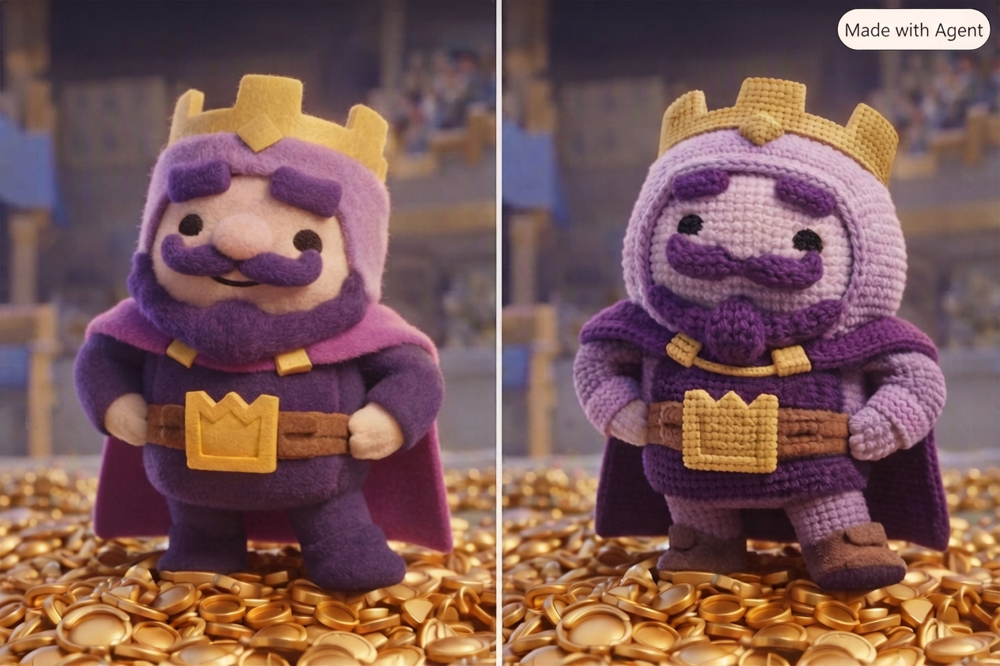

Featured object
Kings
A study in character, texture, and imagined worlds—where crafted figures meet a richly theatrical setting.
Ferry Building Gallery
Gallery section
Look closely at form, space, and the stories carried by three-dimensional art.

Featured object
A study in character, texture, and imagined worlds—where crafted figures meet a richly theatrical setting.